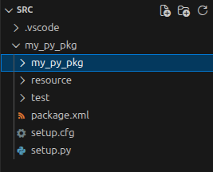
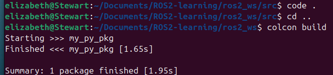
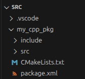

基础
ROS 工作空间
ROS 工作空间是一个具有特定结构的目录。通常包含一个 src 子目录。ROS 软件包的源代码就位于该子目录中。通常情况下，该目录初始状态为空。
colcon 执行源代码外部构建
默认情况下，它会创建以下目录作为 src 目录的同级目录：
build目录将用于存储中间文件。每个软件包都会创建一个子文件夹，例如，CMake 就是在该子文件夹中调用的。install目录是每个软件包的安装位置。默认情况下，每个软件包都会安装到单独的子目录中。log目录包含有关每次 colcon 调用的各种日志信息。
创建pkg点示例
python
- 先创建一个工作空间
- colcon build 创建文件夹目录
-
在src文件夹下
-
ros2 pkg create my_py_pkg --build-type ament_python --dependencies rclpy- pkg: package
- build-type:
- c++,python
- ament: build system
- create：后面跟文件名
- dependencies: 引入库
-
code .-
依旧在src文件下进行
-
目录结构
-

-
代码写在第二级my_my_pkg的文件夹下，这里还有__init__.py文件
- package.xml
- 版本描述
- License
- dependencies
- 非常重要
- setup.py
- 安装节点
- 回到工作空间
-
-
运行
colcon build，注意不要在src文件下运行
- 注意：可以选择性运行
colcon build --packages-select pkg_name
cpp
-
在src文件夹下
-
ros2 pkg create my_cpp_pkg --build-type ament_cpp --dependencies rclcpp -
code .-
依旧在src文件下进行
-
目录结构
-

-
-
回到工作空间
-
运行
colcon build